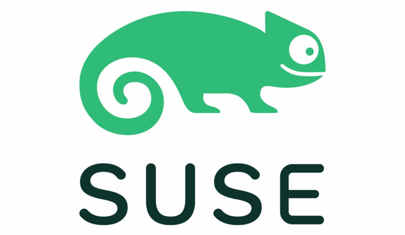

Work Experience
 Senior Software QA Engineer @ SUSE
Remote | November 2022 - Present
- Lead architect for tfp-automation, a GitHub Actions-focused framework that tests Rancher Terraform providers, provisions Rancher environments, and replaces legacy Jenkins pipelines for streamlined regression and release testing.
- Lead validation of complex Rancher issues, performing thorough testing and root cause analysis to facilitate efficient bug triage and quality improvements.
- Actively guided QA automation efforts, mentored junior engineers, and exercised cross-team collaboration across Rancher teams.
- Maintained QA documentation for automation, issue validation, and test setup, improving team knowledge retention and onboarding.
Software QA Engineer @ SUSE
Remote | April 2022 - November 2022
- Executed comprehensive QA testing for Rancher to validate issues and log defects to improve product quality.
- Developed and maintained automated test cases within the Go test framework, enhancing test coverage and reducing manual testing.
- Authored internal Confluence documentation, expanding technical knowledge and improving collaboration.
Linux Product Engineer @ ESRI
Redlands, CA | November 2019 - April 2022
- Validated and certified supported Linux distributions for ArcGIS Enterprise.
- Lead engineer for the deployment of ArcGIS Enterprise on Kubernetes, driving scalable, reliable installation and configuration processes.
- Implemented Jenkins-based regression testing framework for ArcGIS Enterprise, improving release quality and early defect detection.
- Authored the “Monthly Linux Tip” blog series for ArcGIS, consistently engaging readers with ~500 page views per post and enhancing Linux user knowledge.
Support Engineer @ ESRI
Redlands, CA | January 2018 - November 2019
- Presented troubleshooting presentations for customers at ESRI UC 2019.
- Resolved ~800 cases with high-quality customer satisfaction and positive customer surveys.
- Mentored implementation and WebGIS analysts.
 Software Technical Consultant Engineer @ Intel
Software Technical Consultant Engineer @ Intel
Santa Clara, CA | July 2016 - December 2017
- Delivered documentation, code samples, and tutorial videos for Parallel XE 2018.
- Presented Intel C++ / Fortran compiler presentations to stakeholders.
- Led system administrative tasks for maintaining Intel compiler machines.